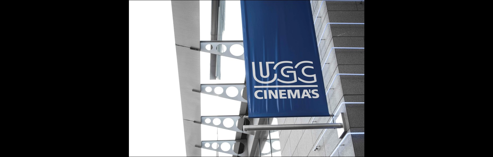
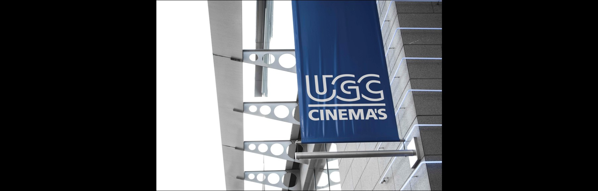

Hotspots
Ontspanning
Culinair | Ontspanning | Uitgaan | Sport en Cultuur
Cargo Zomerbar | Park Spoor Noord, 2060 Antwerpen
Ontspannende muziek, huisgemaakte cocktails, overheerlijke tapas en pasta’s op het terras en dit met uitzicht op het park... Beter kan de zomer in Antwerpen niet zijn!
Dit is Cargo, de zomerbar van Antwerpen. Cargo 2.0 doet een nieuwe wind waaien door Park Spoor Noord. Er wordt niet geraakt aan het oude concept waarbij de Antwerpenaar voor een dagje op vakantie kan gaan in eigen stad. Kinderen kunnen zich nog altijd naar hartenlust uitleven in de fonteinen en de speeltuinen, terwijl de mama’s en papa’s toezien vanuit een strandstoeltje. Eéntje na het werk, Party DJ’s in het weekend, live optredens op donderdag en sport op groot scherm, het blijft allemaal bestaan.Wat is er dan wel nieuw? Cargo zomerbar pakt uit met een compleet nieuw design, een nieuw terras en ook de nieuwe koks van Fiskebar hebben een kleine, maar betaalbare menukaart samengesteld. Kom het zelf ontdekken !
 

UGC | Van Ertbornstraat 17, 2060 Antwerpen
Je kan natuurlijk op vele manieren ontspannen. Thuis lui in de zetel een film zien of misschien wil je ook wel het huis uit. UGC Cinema’s biedt elke dag een reeks films aan van verschillende genres. Voor ieder wat wils dus! Lekker onderuit zakken in de zachte zetels met een bakje popcorn en een drankje, wie geniet daar nu niet van? Dit kan je uiteraard alleen doen, maar ook met een groep vrienden. Maak het gezellig en genieten maar!
Ergo Sun Zonnecentrum | Franklin Roosevelt-plaats 10, 2060 Antwerpen
Een mooi kleurtje krijgen en ontspanning in één? Wat wil een mens nog meer?
Ergosun is een steeds vernieuwend zonnecenter. De keten telt momenteel 13 studio’s in de omgeving van Antwerpen. Er wordt steeds nadruk gelegd op kwaliteit, hygiëne en comfort in een ontspannen sfeer.
Bij Ergosun krijg je steevast persoonlijk advies en er kan desgewenst een individueel bruiningsprogramma op maat worden opgesteld. Dit zonnecenter volgt steeds de nieuwste trend en beschikt over de nieuwste toestellen met volledige climatisatie. Ergosun beschikt over ruime cabines waar je je onmiddellijk op je gemak voelt. De cabines worden na elke beurt volledig schoongemaakt en de handdoeken vervangen. Op deze manier geniet je steeds van een optimale netheid tijdens het zonnen. Ze bieden tevens een compleet assortiment aan van verzorgingscosmetica en producten om veilig te bruinen. Ergosun verwelkomt zowel mannen als vrouwen!
Leeftijd 18+.
Libidos Erotheek | Gemeentestraat 11, 2060 Antwerpen
Bent u als vrijgezel op zoek naar iets pikants? Dan zit je bij de Libidos Erotheek helemaal goed!
De Libidos erotheken bestaan ondertussan al bijna 25 jaar. Ze zijn verspreid over heel België, maar zijn origineel gestart in Antwerpen. Wat is een erotheek nu juist? Een synoniem hiervoor is simpelweg: sekswinkel. Hier kan je allerhande producten aanschaffen voor hem en haar. Durf je de stap over die drempel toch niet te nemen? Niet getreurd! Er is nog altijd een webshop waar je rustig alles kan bekijken en bestellen. Libidos erotheek levert snel uit de haast onuitputtelijke vooraad.Libidos is een Belgisch vennootschap die perfect de gevoeligheden van de klanten verstaat!
Radisson Blu Hotel | Koningin Astridplein 7, 2018 Antwerpen
Altijd al eens een overnachting in het prachtige Antwerpen willen boeken, maar nooit een goede plek gevonden? Dan kan je best eens een kijkje nemen in het Radisson Blu Hotel!
Dit hotel staat bekend om zijn goede service en vriendelijke bediening. Om nog maar te zwijgen van de gezellige sfeer en de praktische ligging. Het hotel is direct tegenover Antwerpen-Centraal gelegen en biedt tevens de mogelijkheid om te genieten van de Diamant- en modewijken van Antwerpen.
De 247 onlangs opgeknapte kamers zijn ontworpen door Michael Graves en bieden voorzieningen als snel draadloos internet en individuele klimaatregeling. In de Square Brasserie en Terrace worden Belgische en internationale gerechten geserveerd met Belgisch bier, en Windows of Antwerp serveert elke ochtend het Super Breakfast Buffet. There’s no place like the Radisson BLu.